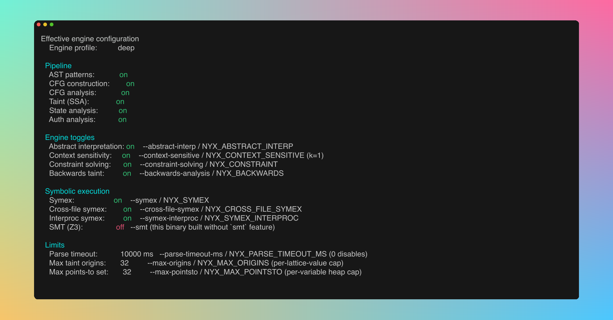
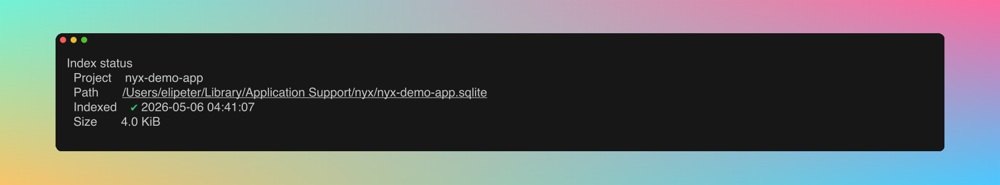

#CLI Reference
#Global
nyx [COMMAND]
nyx --version
nyx --help#nyx scan
Run a security scan on a directory.
nyx scan [PATH] [OPTIONS]PATH defaults to . (current directory).
#Analysis Mode
| Flag | Default | Description |
|---|---|---|
--mode <MODE> |
full |
Analysis mode: full, ast, cfg, or taint |
| Mode | What runs |
|---|---|
full |
AST patterns + CFG structural analysis + taint analysis |
ast |
AST patterns only (fastest, no CFG or taint) |
cfg / taint |
CFG + taint analysis only (no AST patterns) |
Deprecated aliases: --ast-only (use --mode ast), --cfg-only (use --mode cfg), --all-targets (use --mode full).
#Index Control
| Flag | Default | Description |
|---|---|---|
--index <MODE> |
auto |
Index behavior: auto, off, or rebuild |
| Index Mode | Behavior |
|---|---|
auto |
Use existing index if available; build if missing |
off |
Skip indexing, scan filesystem directly |
rebuild |
Force rebuild index before scanning |
Deprecated aliases: --no-index (use --index off), --rebuild-index (use --index rebuild).
#Output
| Flag | Default | Description |
|---|---|---|
-f, --format <FMT> |
console |
Output format: console, json, or sarif |
--quiet |
off | Suppress status messages (stderr), including the Preview-tier banner for C/C++ scans |
--no-rank |
off | Disable attack-surface ranking |
--no-state |
off | Disable state-model analysis (resource lifecycle + auth state). Overrides scanner.enable_state_analysis |
#Profiles
| Flag | Default | Description |
|---|---|---|
--profile <NAME> |
(none) | Apply a named scan profile. Built-ins: quick, full, ci, taint_only, conservative_large_repo. User-defined profiles override built-ins with the same name. CLI flags still take precedence over profile values |
#Filtering
| Flag | Default | Description |
|---|---|---|
--severity <EXPR> |
(none) | Filter findings by severity |
--min-score <N> |
(none) | Drop findings with rank score below N |
--min-confidence <LEVEL> |
(none) | Drop findings below this confidence level (low, medium, high) |
--require-converged |
off | Drop findings whose engine provenance notes indicate widening (over-report) or analysis bail. Keeps under-report findings (emitted flow is still real). Intended for strict CI gates. |
--fail-on <SEV> |
(none) | Exit code 1 if any finding >= this severity |
--show-suppressed |
off | Show inline-suppressed findings (dimmed, tagged [SUPPRESSED]) |
--keep-nonprod-severity |
off | Don't downgrade severity for test/vendor paths |
--all |
off | Disable category filtering, rollups, and LOW budgets -- show everything |
--include-quality |
off | Include Quality-category findings (hidden by default) |
--max-low <N> |
20 |
Maximum total LOW findings to show |
--max-low-per-file <N> |
1 |
Maximum LOW findings per file |
--max-low-per-rule <N> |
10 |
Maximum LOW findings per rule |
--rollup-examples <N> |
5 |
Number of example locations in rollup findings |
--show-instances <RULE> |
(none) | Expand all instances of a specific rule (bypass rollup) |
Severity expression formats:
--severity HIGH # Only high
--severity "HIGH,MEDIUM" # High or medium
--severity ">=MEDIUM" # Medium and above (high + medium)
--severity ">= low" # All severities (case-insensitive)Deprecated aliases: --high-only (use --severity HIGH), --include-nonprod (use --keep-nonprod-severity).
--fail-on returns a non-zero exit code when the threshold trips, so CI jobs fail without further wiring:

Quality-category and rollup-prone Low findings are filtered down by default. The footer tells you exactly what got dropped and which knob to turn:

#Analysis Engine Toggles
Override the corresponding [analysis.engine] values in nyx.conf for a single run. All default on; pass the --no-* variant to disable.
| Pair | Config field | Effect when disabled |
|---|---|---|
--constraint-solving / --no-constraint-solving |
constraint_solving |
Skip path-constraint solving; infeasible paths no longer pruned |
--abstract-interp / --no-abstract-interp |
abstract_interpretation |
Skip interval / string / bit abstract domains |
--context-sensitive / --no-context-sensitive |
context_sensitive |
Treat intra-file callees insensitively (summary-only) |
--symex / --no-symex |
symex.enabled |
Skip the symex pipeline; no symbolic verdicts or witnesses |
--cross-file-symex / --no-cross-file-symex |
symex.cross_file |
Skip extracting / consulting cross-file SSA bodies |
--symex-interproc / --no-symex-interproc |
symex.interprocedural |
Cap symex frame stack at the entry function |
--smt / --no-smt |
symex.smt |
Skip the SMT backend (still a no-op without the smt feature) |
--backwards-analysis / --no-backwards-analysis |
backwards_analysis |
Demand-driven backwards taint walk from sinks (default off) |
--parse-timeout-ms <N> |
parse_timeout_ms |
Per-file tree-sitter parse timeout (ms); 0 disables the cap |
#Lattice-width Caps
Two caps bound the width of taint origin sets and points-to sets per SSA value. When a set would exceed the cap, entries are truncated deterministically and an engine note (OriginsTruncated / PointsToTruncated) is recorded on affected findings so you can see when precision was lost.
| Flag | Default | Description |
|---|---|---|
--max-origins <N> |
32 |
Max taint origins retained per lattice value. Raise on very wide codebases where truncation is observed; lower only when lattice width is a measured bottleneck. Also set via NYX_MAX_ORIGINS |
--max-pointsto <N> |
32 |
Max abstract heap objects retained per points-to set. Raise on factory-heavy codebases where truncation is observed. Also set via NYX_MAX_POINTSTO |
See configuration.md for the full schema.
#Engine-Depth Profile
Individual engine toggles are fine-grained but hard to remember in combination. The --engine-profile shortcut sets the whole stack in one shot, and individual flags are layered on top after the profile is applied.
| Profile | Backwards | Symex | Abstract-interp | Context-sensitive |
|---|---|---|---|---|
fast |
off | off | off | off |
balanced (default) |
off | off | on | on |
deep |
on | on (cross-file + interprocedural) | on | on |
All three profiles build the AST, CFG, and SSA lattice and run forward taint; the columns above show which additional analyses each profile enables. SMT (symex.smt) is always off unless Nyx was built with --features smt.
Individual flags override the profile. For example, --engine-profile fast --backwards-analysis runs the fast stack but with backwards analysis on.
#Explain Effective Engine
--explain-engine prints the resolved engine configuration (profile + config + CLI overrides + env-var fallbacks) to stdout and exits without scanning. Useful for sanity-checking a CI invocation.
nyx scan --engine-profile deep --no-smt --explain-engine
#Examples
# Basic scan
nyx scan
# Scan specific path, JSON output
nyx scan ./server --format json
# CI gate: fail on medium+, SARIF output
nyx scan . --format sarif --fail-on medium > results.sarif
# Fast AST-only scan, no index
nyx scan . --mode ast --index off
# High-severity only, quiet mode
nyx scan . --severity HIGH --quiet
# Only findings scoring 50 or above
nyx scan . --min-score 50
# Only medium+ confidence findings
nyx scan . --min-confidence medium
# Show everything (no filtering, no rollups)
nyx scan . --all
# Include quality findings but keep rollups and budgets
nyx scan . --include-quality
# See all unwrap findings expanded
nyx scan . --include-quality --show-instances rs.quality.unwrap
# Allow more LOW findings
nyx scan . --max-low 50 --max-low-per-file 5#nyx index
Manage the SQLite file index.
#nyx index build
nyx index build [PATH] [--force]Build or update the index for the given path (default: .).
| Flag | Description |
|---|---|
-f, --force |
Force full rebuild, ignoring cached file hashes |
#nyx index status
nyx index status [PATH]Display index statistics (file count, size, last modified) for the given path.

#nyx list
nyx list [-v]List all indexed projects.
| Flag | Description |
|---|---|
-v, --verbose |
Show detailed information per project |
#nyx clean
nyx clean [PROJECT] [--all]Remove index data.
| Argument/Flag | Description |
|---|---|
PROJECT |
Project name or path to clean |
--all |
Clean all indexed projects |
#nyx config
Manage configuration.
#nyx config show
Print the effective merged configuration as TOML. Useful for sanity-checking what the scanner is actually using after nyx.conf and nyx.local merge:
![nyx config show output: TOML dump of the merged scanner config showing [scanner] mode/min_severity/excluded_extensions/excluded_directories, [database] settings, and resolved engine toggles](assets/screenshots/docs/cli-configshow.png)
#nyx config path
Print the configuration directory path.
#nyx config add-rule
nyx config add-rule --lang <LANG> --matcher <MATCHER> --kind <KIND> --cap <CAP>Add a custom taint rule. Written to nyx.local.
| Flag | Values |
|---|---|
--lang |
rust, javascript, typescript, python, go, java, c, cpp, php, ruby |
--matcher |
Function or property name to match |
--kind |
source, sanitizer, sink |
--cap |
env_var, html_escape, shell_escape, url_encode, json_parse, file_io, fmt_string, sql_query, deserialize, ssrf, code_exec, crypto, unauthorized_id, data_exfil, ldap_injection, xpath_injection, header_injection, open_redirect, ssti, xxe, prototype_pollution, all |
#nyx config add-terminator
nyx config add-terminator --lang <LANG> --name <NAME>Add a terminator function (e.g. process.exit). Written to nyx.local.
#nyx rules
Browse the built-in rule registry from the terminal. Same dataset the dashboard's Rules page reads from: cap-class entries (one per Cap with a canonical rule id), per-language label rules (sink / source / sanitizer), gated sinks, and any custom rules from your config.
#nyx rules list
nyx rules list [--lang <SLUG>] [--kind <KIND>] [--class-only|--no-class] [--json]| Flag | Values |
|---|---|
--lang |
Language slug (javascript, typescript, python, java, php, go, ruby, rust, c, cpp). Cap-class entries (language = "all") still surface alongside any language filter unless --no-class is set. |
--kind |
class (cap-class entry), source, sink, sanitizer |
--class-only |
Show only the cap-class registry entries, suppressing per-language label rules and gated sinks. |
--no-class |
Suppress cap-class registry entries, show only per-language label rules and gated sinks. Conflicts with --class-only. |
--json |
Emit JSON instead of the human-readable table. Schema matches the /api/rules response. |
Examples:
# Browse the seven new vulnerability classes
nyx rules list --class-only
# All Java sinks
nyx rules list --lang java --kind sink
# JSON output for scripted filtering
nyx rules list --json | jq '.[] | select(.cap == "ldap_injection")'The enabled column reflects the analysis.disabled_rules overlay from your config, so a rule disabled in nyx.local shows up here too. Custom rules added via nyx config add-rule appear at the end with is_custom: true.
#Exit codes
See output.md. Summary: 0 on success (including findings without --fail-on), 1 when --fail-on trips, non-zero on scan errors.
#Environment variables
Runtime behaviour:
| Variable | Description |
|---|---|
RUST_LOG |
Set tracing verbosity (e.g. RUST_LOG=debug nyx scan .) |
NO_COLOR |
Disable ANSI color output |
Engine toggles (legacy, still honored; prefer CLI flags or [analysis.engine] config):
| Variable | Matches |
|---|---|
NYX_CONSTRAINT |
--constraint-solving |
NYX_ABSTRACT_INTERP |
--abstract-interp |
NYX_CONTEXT_SENSITIVE |
--context-sensitive |
NYX_SYMEX, NYX_CROSS_FILE_SYMEX, NYX_SYMEX_INTERPROC |
--symex and friends |
NYX_SMT |
--smt (no-op without the smt feature) |
NYX_BACKWARDS |
--backwards-analysis |
NYX_PARSE_TIMEOUT_MS |
--parse-timeout-ms |
NYX_MAX_ORIGINS, NYX_MAX_POINTSTO |
--max-origins, --max-pointsto |